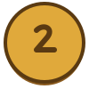
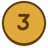
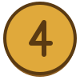
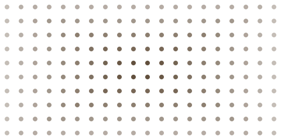
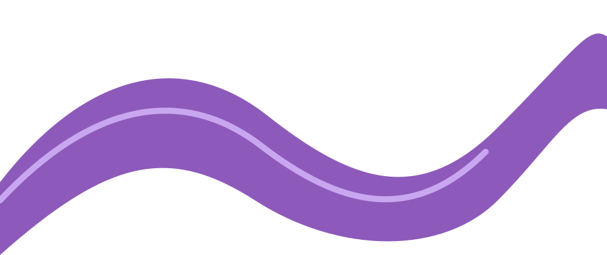

Ржаной
Закваска и обдирная мука.
Что нарисовано внутри карточки, относится к ней самой: это иллюстрация или украшение блока. Фоном страницы оно не считается, даже если бледное.
Закваска и обдирная мука.
Только по субботам.
Тмин в тесте и сверху.


Бледность меряется по снимку. Картинка, которую стили сделали полупрозрачной, но которая на снимке осталась заметной, бледным фоном не считается; картинка с нулевой непрозрачностью — тем более.
Заголовок занимает всю ширину окна, поэтому «поля» рядом с ним нет: полоса содержимого здесь — от края до края. Орнамент справа стоит в той же полосе и наполовину уходит за край окна. Содержимое так не ставят, а украшения — постоянно.
Это предмет на поле, хотя по полосе он «внутри».
Раздел кончается в восьми пикселях от края окна и обрезает всё, что из него торчит. Орнамент срезан его правым краем — для человека это то же самое, что срезан окном.
Заголовок опять во всю ширину, чтобы «поля» по полосе не было.
Раздел ниже своего содержимого и обрезает орнамент слева: видна только его верхушка. Мерить надо то, что видно, и раздел после замера должен остаться непрокрученным.
Ряд одинаково устроенных картинок — содержимое, даже когда крайняя стоит у самого окна и обрезана им.
На телефоне колонка содержимого занимает почти всё окно, и «вне колонки» там не бывает. Небольшой предмет вне потока у самого края окна остаётся предметом на поле.
Три одинаковые обёртки стоят вне потока, каждая своими координатами, на одной высоте на поле. Текста и ссылок в них нет — это украшения, а не ряд логотипов.



Пять монет одного набора. Четыре стоят на полях, пятая — в колонке, справа от этого текста. Соседи одного набора получают один вид.
Файлы набора различаются только цифрой в имени.

Мягкий край бывает не только у пятна света. Предмет не в фокусе, мазок широкой кистью и размытый набросок — формы: у них есть плато или линии. Пятно света гаснет от середины к краю.
Фото во весь раздел, поверх него — тёмный градиент с прозрачной серединой. Это не пятно света: середина прозрачнее краёв.



Сетка точек справа — не плитка фона, а одна картинка. Два наброска ниже отдаёт один обработчик картинок: адреса различаются только параметром.

Крупная заметная фигура за текстом — не предмет на поле и не бледный рисунок. Видом она не засчитывается, но в вывод идёт отдельной строкой, с вырезкой: посмотреть глазами.
Текст лежит прямо на ленте, чтобы она была «за содержимым».
Картинка растянута на блок с текстом: фото это или бледный рисунок — глазами.
Пятно света лежит в фоне всего раздела. Одинаковые карточки выше не должны занять весь предел замеров.
Бледная иллюстрация стоит вне потока, но под неё заведена своя коробка заданной высоты: текста рядом с ней в этой коробке нет. Это содержимое ячейки, а не фон.
Значки слева от ссылок стоят в потоке, по одному на пункт списка. Крайние оказываются сбоку от текста своей строки, но это содержимое.
Значок преимущества и значок формы поставлены вне потока в отступ своего блока. Это значки блоков, а не предметы на полях страницы.
Заказ, сделанный до полудня, приезжает сегодня. Курьер звонит за полчаса, поднимает бутыли на этаж и забирает пустую тару.
Раз в месяц пишем о новых районах доставки и скидках. Отписаться можно в любой момент.
Одинаковые фигуры в несколько рядов — узор; слово — одна строка разных знаков.
Крупное пятно света нарисовано фоном самой карточки: у неё скругление, но нет ни своего цвета, ни рамки, ни тени.
Большое пятно света выглядывает из-за правого края окна: видна его узкая часть, но это фон страницы.
Тонкая линия с разницей в три уровня из 255 глазом не видна.